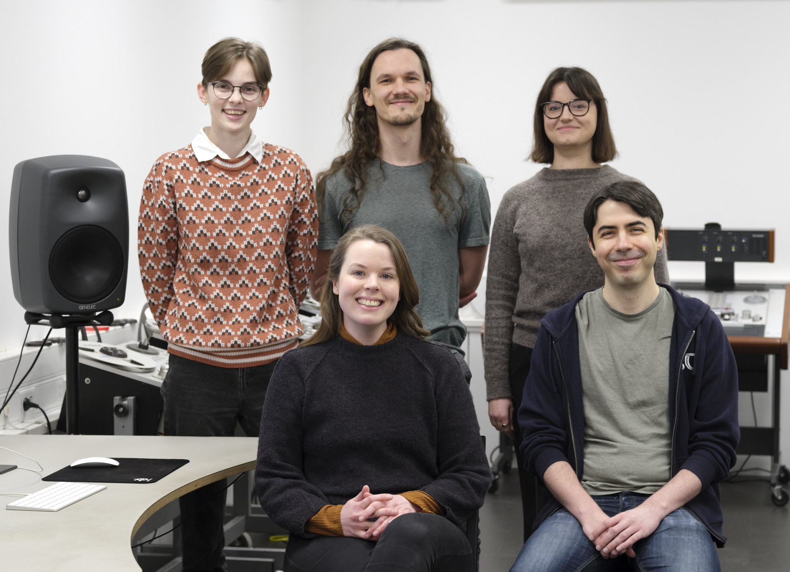
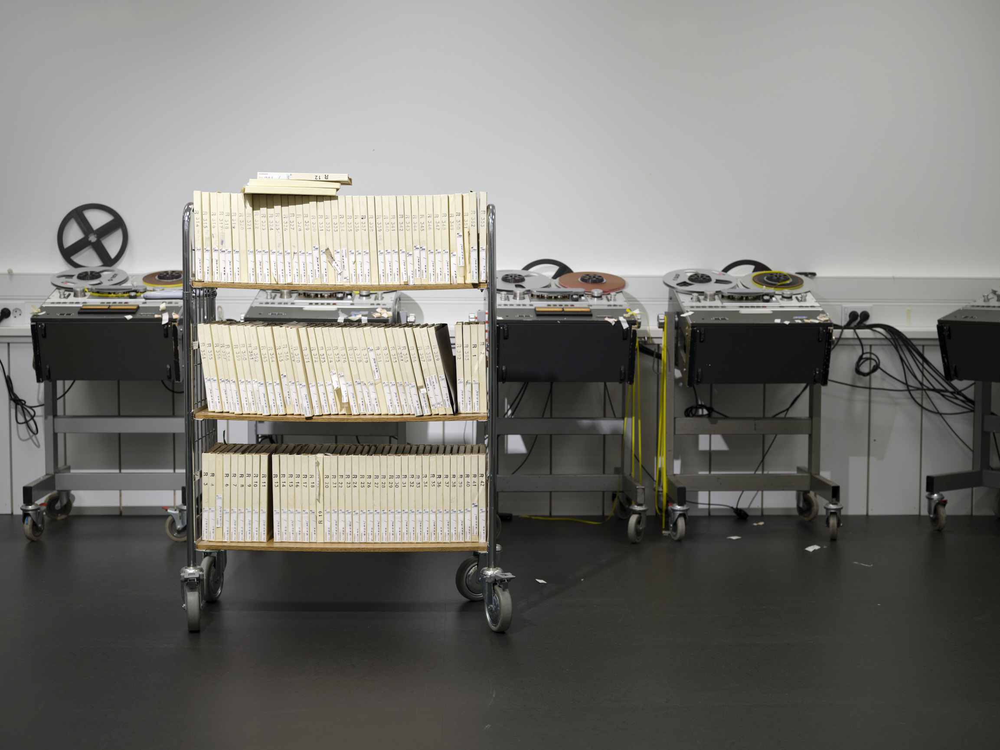
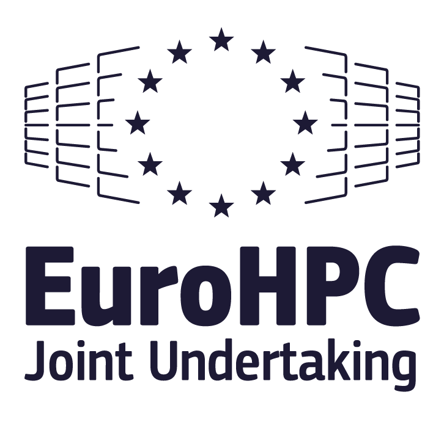

Improving Swedish speech recognition
KBLab proudly presents KB-Whisper, a speech to text model fine-tuned using 50,000 hours of transcribed speech. Traditionally, Automatic Speech Recognition (ASR) systems have been based on models that either require an extensive unsupervised pretraining or supervised training that demands very high-quality orthographic transcripts, which are rare and expensive to produce.
The Whisper model (Radford et al. 2022), originally released by OpenAI has revolutionized automatic speech recognition, by showing that high performance could be achieved with a slight decrease in quality of the transcript, thus unlocking large amounts of training data that has hitherto not been used. Subtitles for TV often use abbreviations to fit the text on the screen, and are not considered a gold standard transcription. However, Radford et al. (2022) showed that this training data, extracted from the web, was still good enough for Whisper to learn.
The massive improvement gain with Whisper has been shown for English, and this result is directly proportional to the amount of English training data available on the web. For languages with fewer speakers, this type of data is less represented on the web and leads to poorer performance. In order to bridge this performance gap, the team at KBLab have constructed a training dataset of transcribed Swedish speech of unprecedented size, which is used to fine-tune Whisper models.

Subtitles, Parliament recordings and dialect archives
The National Library of Sweden is responsible for collecting, preserving and giving access to everything that is published in Sweden. The collections include the audiovisual archives that hold TV broadcasted in Sweden. Swedish subtitles paired with spoken Swedish from TV broadcasts constitute a large portion of the training data. Parliament recordings paired with high quality transcripts in the form of protocols provide the second largest source of the training data. This dataset is made publicly available on Huggingface, and constitute 23,000 hours of transcribed Swedish speech.
Both of these data sources have the advantage of covering wide variations of spoken Swedish. In order to enhance KB-Whisper’s performance in transcribing rare variations of Swedish, dialect recordings from The Institute for language and folklore (Isof) are included. Subtitles are also extracted from YouTube channels with Swedish content. Finally, datasets collected as crowd sourced initiatives such as Mozillas CommonVoice, Googles FLEURS and the Nordic Speech Technology (NST) dataset are used partly in the training, and partly in the evaluation.

Two stages of data quality
To assess the quality of transcriptions, i.e. how well the subtitles, protocols and other transcriptions match the spoken audio, we implemented a preprocessing pipeline. The training examples are split into small 30-seconds chunks and each audio chunk is transcribed using OpenAI’s Whisper-large-v3 and KBLabs VoxRex (Malmsten, Haffenden, and Börjeson 2022). Then the overlap between the original transcript and the two AI-generated transcriptions are assessed using Character Error Rate (CER), BLEU and ROUGE scores.
The first quality assessment catches examples with low or no overlap, but still of sufficient quality for the model to learn from, yielding a large training dataset with an increased probability of covering rare Swedish words and names, denoted below as the Stage 1 data. The second quality assessment focuses on defining the style of transcription, aiming to teach the model how to transcribe rather than providing a large number of examples. Two styles of transcriptions are defined: one more subtitle-like (Stage 2-subtitle), and one more orthographic (Stage 2-standard) for more precise transcription.
Each stage is defined by a set of criteria on CER, BLEU and ROUGE, which are outlined in Table 1.
| BLEU | CER-head | CER-tail | ROUGE | |
|---|---|---|---|---|
| Stage 1 | > 0.2 | - | - | - |
| Stage 2 standard | > 0.6 | < 0.3 | < 0.3 | > 0.7 |
| Stage 2 subtitle | > 0.6 | < 0.4 | < 0.4 | - |
The resulting hours the fall into each category is presented in Table 2.
| Dataset | Stage 1 (h) | Stage 2 standard (h) | Stage 2 subtitle (h) |
|---|---|---|---|
| Subtitles | 34,261 | 3,110 | 6,928 |
| Riksdag | 21,949 | 5,119 | 8,710 |
| ISOF | 54 | 54 | 54 |
| NST | 250 | 250 | 250 |
| Total | 56,514 | 8,533 | 15,942 |
Based on open weights from OpenAI’s Whisper
Following the excellent Whisper fine-tuning tutorial from Huggingface we fine-tune all sizes of Whisper models on our Swedish training dataset of unprecedented size. The training is performed in a two-stage approach, where the first stage leverages the large Stage 1 dataset, followed by two parallel training stages where the model is either trained on the Stage 2-subtitle data or the Stage 2-standard data.
The training is executed on the Leonardo Supercomputer hosted by CINECA (Italy), that we were granted access to through a EuroHPC JU AI and data-intensive applications call.
A great improvement in Swedish ASR
We have evaluated the models on three datasets: FLEURS (train and test set), NST (test set), and Common Voice 16.0 (train, validation, and test set). The CommonVoice and FLEURS data has not been part of the training set and can therefore serve as a benchmark for the models’ out-of-domain performance.
To compare our newly trained models with OpenAI’s models, we calculate Word Error Rate (WER) and BLEU scores for each of the mentioned datasets. WER measures transcription accuracy by calculating the percentage of words that are substituted, deleted, or inserted, while the BLEU score evaluates how well a transcription matches the reference text.
The results evaluated in terms of WER is presented in the table below.
| Model size | FLEURS | CommonVoice | NST | |
|---|---|---|---|---|
| tiny | KBLab | 13.2 | 12.9 | 11.2 |
| OpenAI | 59.2 | 67.8 | 85.2 | |
| base | KBLab | 9.1 | 8.7 | 7.8 |
| OpenAI | 39.6 | 52.1 | 53.4 | |
| small | KBLab | 7.3 | 6.4 | 6.6 |
| OpenAI | 20.6 | 26.4 | 26.4 | |
| medium | KBLab | 6.6 | 5.4 | 5.8 |
| OpenAI | 12.1 | 15.8 | 17.1 | |
| large-v3 | KBLab | 5.4 | 4.1 | 5.2 |
| OpenAI | 7.8 | 9.5 | 11.3 |
Our evaluations show that the best-performing model reduces the WER by an average of 47% compared to Whisper-large-v3.
The results evaluated in terms of BLEU is presented in the table below.
| Model size | FLEURS | CommonVoice | NST | |
|---|---|---|---|---|
| tiny | KBLab | 76.6 | 73.7 | 74.3 |
| OpenAI | 26.9 | 21.1 | 24.0 | |
| base | KBLab | 83.2 | 79.9 | 78.3 |
| OpenAI | 41.1 | 32.5 | 36.9 | |
| small | KBLab | 86.6 | 83.5 | 79.6 |
| OpenAI | 64.0 | 56.5 | 58.2 | |
| medium | KBLab | 87.6 | 85.0 | 80.2 |
| OpenAI | 77.1 | 70.1 | 68.9 | |
| large-v3 | KBLab | 89.8 | 87.2 | 81.1 |
| OpenAI | 84.9 | 79.1 | 75.1 |
The most significant improvements are observed in smaller models, demonstrating that high-quality transcriptions can be achieved with fewer computational resources.The KB-whisper-small model outperforms OpenAI’s whisper-large-v3, a model six times its size. ´This means that similar transcription quality can be obtained using a smaller model, making speech-to-text more accessible and less costly.
Where to find the models?
All models are freely available for download from KBLab’s page on HuggingFace.
For more information on ASR models and how to use KBLab’s Whisper models programmatically, we recommend exploring this notebook.
Acknowledgments
We acknowledge the EuroHPC Joint Undertaking for awarding this project access to the EuroHPC supercomputer LEONARDO, hosted by CINECA (Italy) and the LEONARDO consortium, through the Development Access call and AI and data intensive applications access call.

The development work to produce the notebook mentioned above was carried out within the HUMINFRA infrastructure project.

References
Citation
@online{vesterbacka2025,
author = {Vesterbacka, Leonora and Rekathati, Faton and Kurtz, Robin
and Sikora, Justyna and Toftgård, Agnes},
title = {Welcome {KB-Whisper,} a New Fine-Tuned {Swedish} {Whisper}
Model!},
date = {2025-03-07},
url = {https://kb-labb.github.io/posts/2025-03-07-welcome-KB-Whisper/},
langid = {en}
}